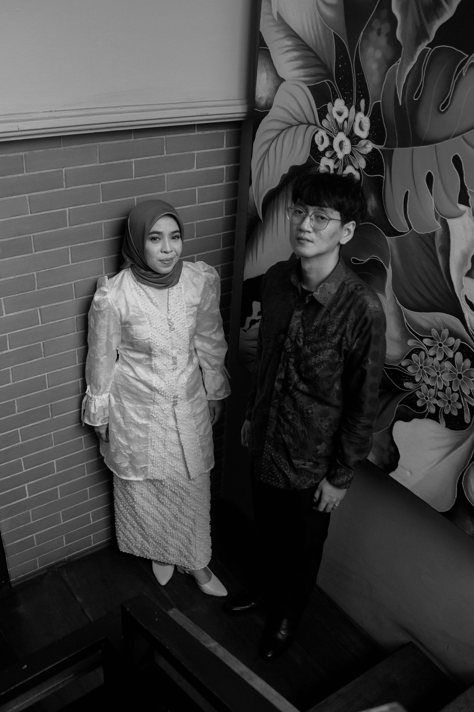
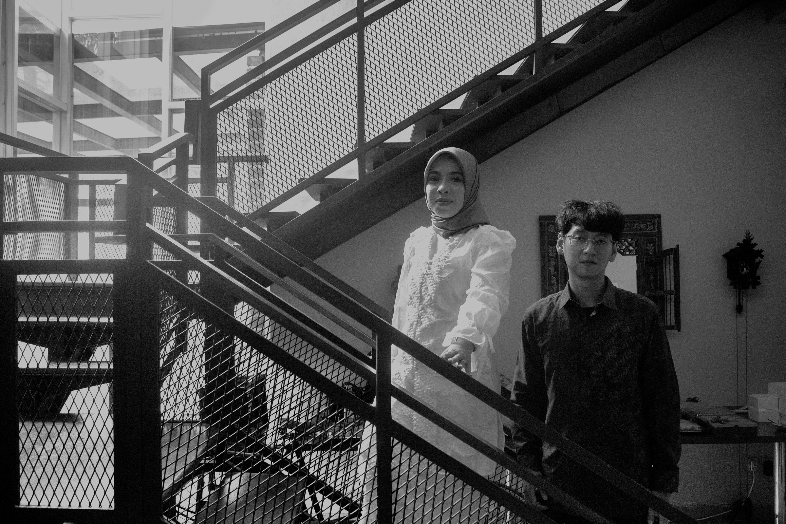
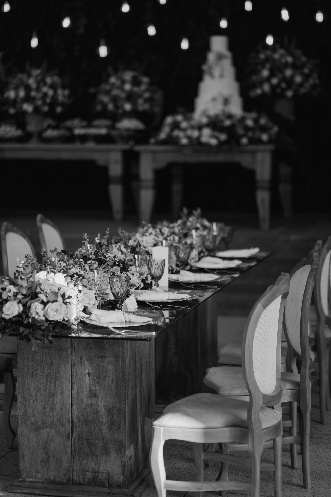

Lokasi Acara
Kami akan melangsungkan acara pernikahan yang sederhana dan intim bersama keluarga dan sahabat terdekat di Gedung SMK Makarya 1 Jakarta

Dan di antara tanda-tanda kekuasaan-Nya ialah Dia menciptakan untukmu isteri-isteri dari jenismu sendiri, supaya kamu cenderung dan merasa tenteram kepadanya, dan dijadikan-Nya diantaramu rasa kasih dan sayang. Sesungguhnya pada yang demikian itu benar-benar terdapat tanda-tanda bagi kaum yang berfikir.

Kami akan melangsungkan acara pernikahan yang sederhana dan intim bersama keluarga dan sahabat terdekat di Gedung SMK Makarya 1 Jakarta
Santai saja, tidak perlu berdandan terlalu formal! Silakan hadir dengan gaya atau pakaian terbaik kalian!
Setelah acara utama selesai, kami mengundang kalian untuk merayakannya dengan makan siang bersama

Kehadiran serta doa restu dari keluarga dan sahabat merupakan hadiah terindah yang sangat kami syukuri.
Tanpa mengurangi rasa hormat, bagi keluarga dan sahabat yang ingin memberikan tanda kasih sebagai bentuk dukungan untuk langkah awal perjalanan pernikahan kami, dapat mengirimkannya melalui:
Bank: BCA
No. Rekening:
5015270010
Atas Nama: Nur Rosyidah
Bank: BCA
No. Rekening:
4890372916
Atas Nama: Muhammad Ilham Rizki
Terima kasih atas segala doa, kebaikan, dan dukungan yang diberikan. Hal ini sangat berarti bagi kami berdua.
Waktu kehadiran bersifat fleksibel. Bapak/Ibu/Sahabat sekalian dipersilahkan hadir mulai dari proses Akad Nikah pada pukul 09.00 WIB, ataupun menyusul pada sesi ramah tamah setelahnya. Sebagai informasi, seluruh rangkaian acara akan berakhir pada pukul 13.00 WIB.
Mengingat keterbatasan kapasitas tempat dan konsep acara yang intim, undangan ini dikhususkan bagi nama yang tertera pada pesan pengiriman. Kami memohon pengertian Anda dan sangat menghargai kerja samanya.
Tersedia area parkir di dalam lingkungan SMK Makarya 1 Jakarta bagi tamu yang membawa kendaraan pribadi. Silakan mengikuti arahan dari petugas di lokasi.